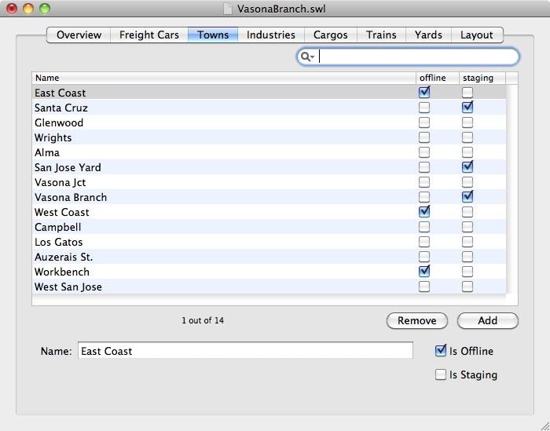

 The Towns tab lets you name the places on your layout that trains visit.
To add a new town, press the "Add" button and provide the named fields. To remove an existing town, select it and press the "Remove" button.
Each town is associated with three pieces of information: its name, whether the town represents a place in staging (off the visible layout), and whether the town represents an offline location (imaginary place a train cannot visit.)
Towns represent places on the layout; they can be as large or small as you want, but generally you want a town to represent an area of your layout that your operators can identify. If they are told that an industry is in "Cucamonga", they should have a good chance to figure out what part of the layout counts as Cucamonga.
Layouts are only important to SwitchList as places trains visit, and as areas holding industries. It's fine to create separate towns for areas close together and part of the same urban area.
One example of separate "towns" for one location on the layout involves cases where a train might only switch half the industries in a a town. If a train only goes one direction in a day (from A to B to C one day, and then running as a separate train from C to B to A the next day), each train might switch the sidings easily handled depending on direction. Breaking a town like B into B-westbound and B-eastbound could let you group your industries into those handled best by eastbound or westbound trains. A train that can handle all the industries would visit both. Breaking the towns isn't particularly neat, but might be good if most of your layout is simple and works well with SwitchList but a couple towns need more precision on which towns switch which industries.
Another reason to break a single location into multiple towns in SwitchList is to allow different trains to switch different parts of town. SwitchList assumes you have a small layout where a train visiting a town can serve all industries in that town. If you want certain industries served separately - for example, you have a large steel mill and want a separate switching job to take traffic into the plant, or have a railroad's repair shops that should be served only by the shop locomotive - you can declare the steel mill or the repair shop to be a separate town, and set up a separate train to take cars from a handy yard to that new town.
For example, imagine the town of "Bayshore" has a yard and also has repair shops, but you don't want trains leaving Bayshore to have to switch cars for the shop. Instead, define a separate Bayshore Shops town, and create a new "Shops Switcher" train that ferries cars between Bayshore (and its yard) and Bayshore shops. Keeping a large yard separate from its industries also lets you control which train actually serves the industries near the yard.
I also use separate towns to distinguish between nearby switching districts. On my Vasona Branch, the San Jose Yard staging yard, West San Jose town, and Auzerais St. town are all in the city of San Jose, but I use multiple towns in SwitchList so a crew switching West San Jose and Auzerais St. have some hints about the location of each industry.
Example Layout: Okaland shows how to represent a single physical town on a layout with multiple SwitchList towns.
{kind=link}